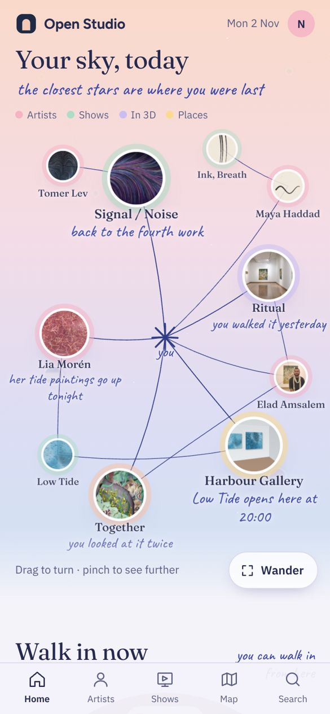
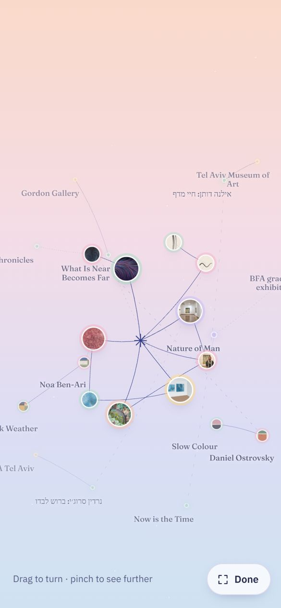
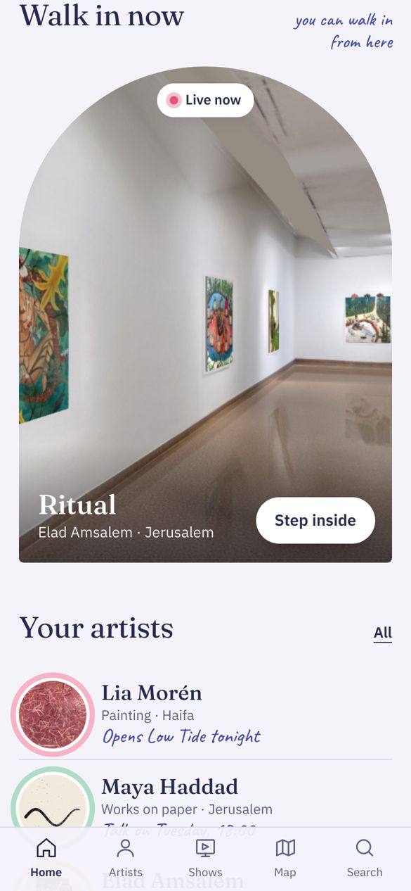

כל כיוון הוא עמוד בית שעובד באמת. פתח אותו באייפון ונסה: השמיים הם הדבר הראשון שרואים. הכוכבים הקרובים הם מה שהשתמשת בו לאחרונה: האמן שביקרת, התערוכה שראית, הסיור שעשית, הגלריה. קווים מחברים ביניהם ובין האמנים שלך. כשמתרחקים מופיעים כוכבים רחוקים: אמנים שעוד לא פגשת ותערוכות שרצות עכשיו.
גרירה הצידה מסובבת את השמיים
צביטה מקרבת או מרחיקה
לחיצה על כוכב פותחת אותו
Wander פותח את השמיים למסך מלא
Step inside נכנס לסיור
מה משותף לכולם
השמיים שלך, למעלה, על כל המסך.
Walk in now: תערוכה שאפשר להיכנס אליה עכשיו. הסיור התלת־ממדי האמיתי של Ritual רץ בתוך עמוד הבית ומסתובב לאט. Step inside מכניס אותך אליו בלי לצאת מהבית.
האמנים שאתה עוקב אחריהם, עם מה שחדש אצלם.
התערוכות שלהם שרצות עכשיו.
מה פתוח לידך: המפה האמיתית של האפליקציה ותערוכות אמיתיות בתל אביב, מהקריאה היומית.
נקי בכוונה: בלי סטורי, בלי ערים, בלי הרשמה לאמנים. האמנים Lia, Maya, Noa, Daniel ו-Tomer הם מעולם הדמו של האפליקציה. הסיור, המפה והתערוכות הקרובות אמיתיים.

השמיים

מתרחקים

הסיור, בקשת
שמי יום Daylight sky
קבוצת הכוכבים שאהבת, אבל ביום: שמיים בפסטל שמשתנים לפי השעה (אפרסק בבוקר, תכלת בצהריים, ורוד בערב, לילך בלילה, אף פעם לא שחור). הכוכבים הרחוקים נבלעים באובך, לא בחושך.
הכוכבים והיד
כל כוכב מוקף בטבעת בצבע של מה שהוא: ורוד לאמן, מנטה לתערוכה, לילך לסיור, צהוב למקום
הקווים בדיו כחולה, נמשכים מעצמם כשנכנסים
ליד הקרובים הערה בכתב יד: "back to the fourth work"
מה לשקול
הכי קרוב למה שתיארת, והכי קריא
החיבור לכתב היד הוא בהערות ובקווים; הצורה עצמה עדיין עגולה ומסודרת
השמיים כמחברת סקיצות של אמן: גיליונות נייר שקוף מונחים זה על זה. בגיליון העליון מה שראית לאחרונה. מתחתיו האמנים שלך. בגיליונות העמוקים, חיוורים יותר, מי שעוד לא פגשת.
הכוכבים והיד
קווי עיפרון, עיגולי עיפרון סביב הקרובים, כתב עיפרון
כתמי צבעי מים בפסטל מאחורי כל כוכב, וכל תמונה גזורה ביד
גרירה מזיזה את הגיליונות זה מעל זה; צביטה צוללת לעומק הערימה
קבוצת הכוכבים כמובייל תלוי, ברוח קלדר, שקרא לזה "ציור בחלל". הכול תלוי ממך: זרועות של חוט דיו, ובכל קצה עיגול צבעוני של מה שנגעת בו. מתחתיו תלויים האמנים שלך. הוא מתנדנד ומסתובב לבד, בתלת־ממד אמיתי.
הכוכבים והיד
הקו של היד הוא החוט עצמו: קווי דיו כפופים
עיגולים בפסטל: אלמוג, תכלת, חמאה, לילך
כשמתרחקים, מאחור תלויים מוביילים של אמנים ותערוכות שעוד לא פגשת
אתה השמש. מה שהשתמשת בו לאחרונה מקיף אותך במסלול הקרוב והמהיר. האמנים שלך במסלול שאחריו. במסלולים החיצוניים, מי שעוד לא פגשת. המרחק מסביר את עצמו: כמה זמן עבר.
הכוכבים והיד
מצויר כמו מחברת של אסטרונום: מסלולי עיפרון על דף מנוקד
כל שם כתוב ביד, וליד כל מסלול כתוב מה הוא: "where you were", "yours", "not met yet"
כוכבי לכת בפסטל; לתערוכות יש טבעת, כמו לשבתאי
מה לשקול
הכי מסודר, ויש היגיון במרחק
כשמתרחקים, המבט על כל המסלולים הוא הרגע היפה ביותר
שמי יום עונה הכי ישירות על מה שביקשת: הכוכבים הם הדבר הראשון, הקווים מחברים בין אמנים, אמנות ואוהבי אמנות, הצבעים בפסטל, וכשמתרחקים מגיעים אמנים ותערוכות חדשים. הוא גם הכי קל להמשיך ממנו לכל האפליקציה.
מנייר שקוף אפשר לקחת את העיפרון ואת כתמי צבעי המים, כדי שזה ירגיש יד ולא מערכת. ממסלולים אפשר לקחת רעיון אחד: שהמרחק ממך יגיד כמה זמן עבר.
אבל זה הבית שלך. תפתח את כולם בטלפון ותגיד לי מה מרגיש נכון
אלה עמודי בית שעובדים, לא עיצוב סופי. אחרי שתבחר אדייק את הכיוון. אחר כך אשליך אותו על כל האפליקציה (כניסה, אמן, תערוכה, מפה), אבדוק באייפון ואעלה גם ל-Figma.